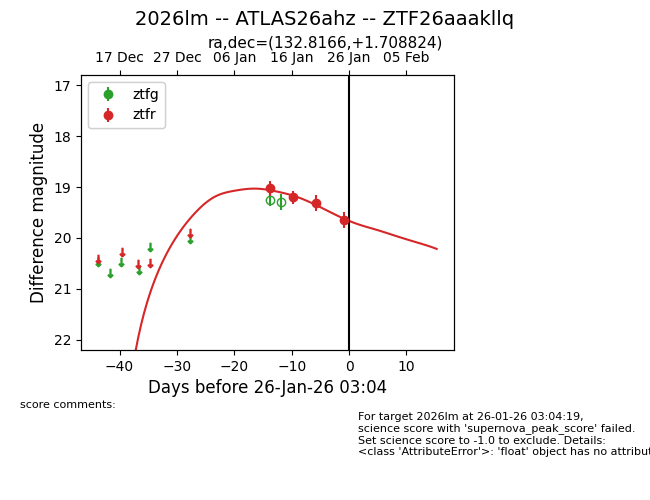
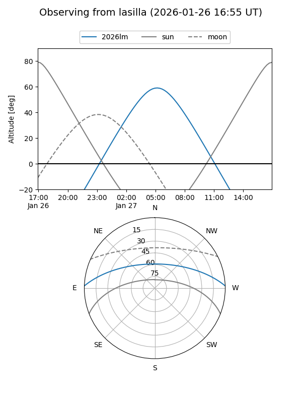
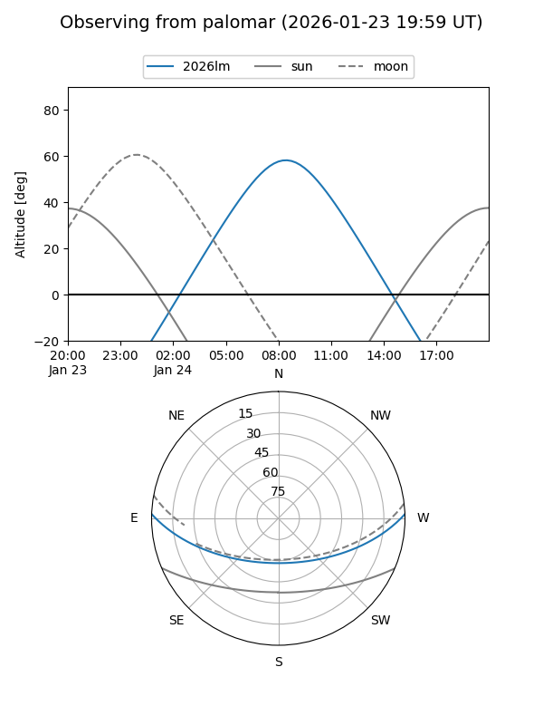
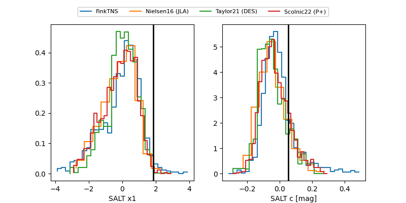

2026lm
Target 2026lm at 2026-01-23 06:31
Aliases and brokers:
FINK: link
Lasair: link
ALeRCE: link
TNS: link
YSE: link
alt names
ZTF26aaakllq (ztf,fink_ztf)
2026lm (tns,yse)
ATLAS26ahz (atlas)
Coordinates:
equatorial (ra, dec) = 132.8166,+1.70882
equatorial (HMS+DMS) = 08:51:15.97,+01:42:31.77
galactic (l, b) = (226.0023,+27.24629)
Flags:
Photometry:
last ztfr=19.31
3 ztfr detections
Lightcurve

Visibility


Additional plots
